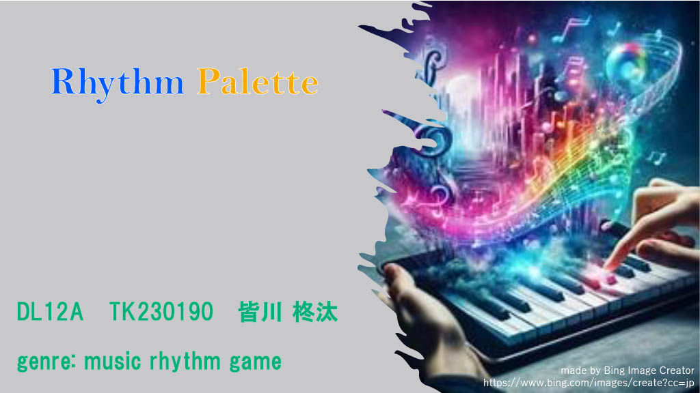
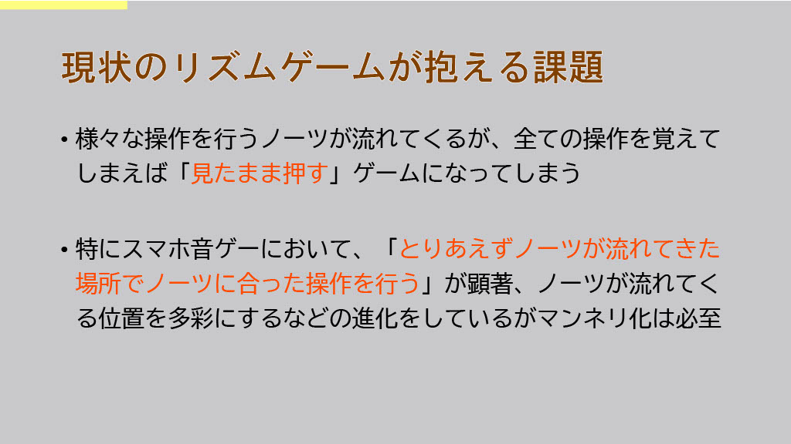
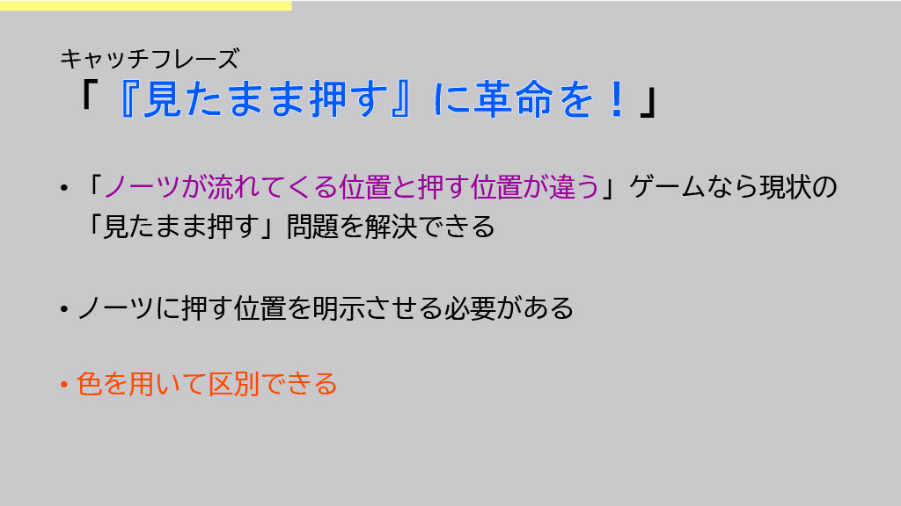
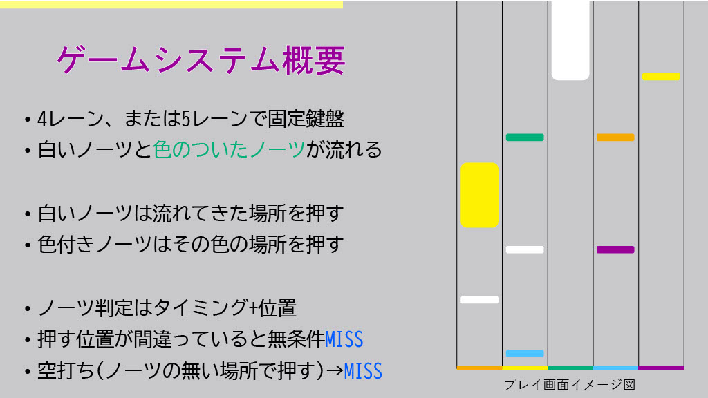
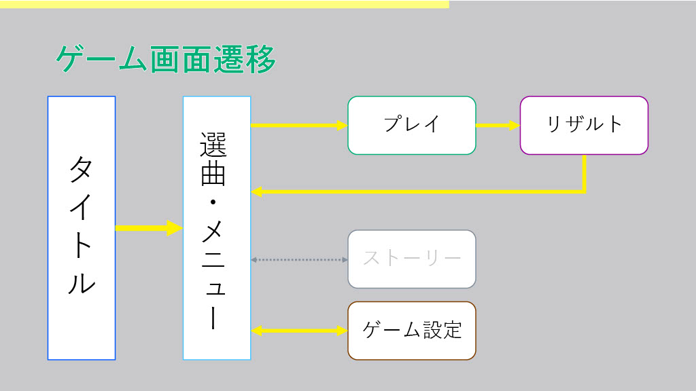
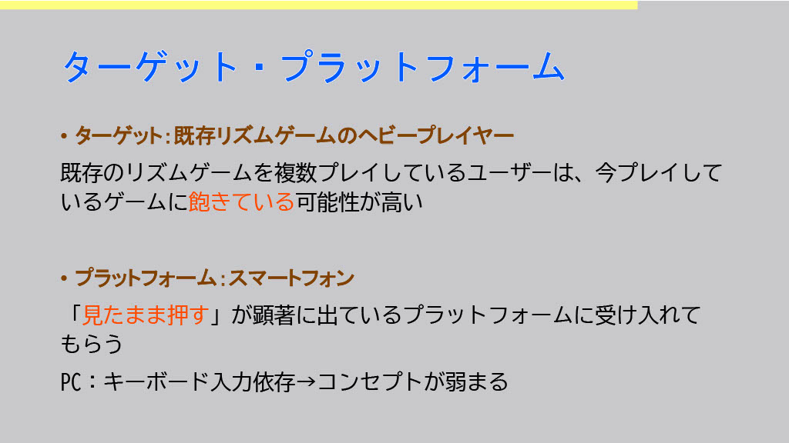
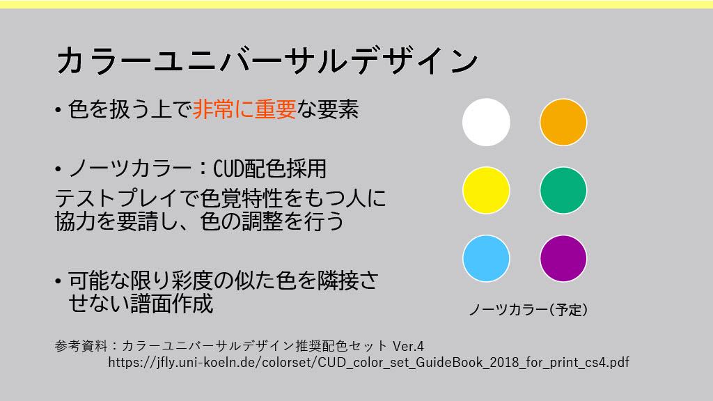

音ゲーの課題解決に挑んだ話

基本情報
- 制作時期
- 大学2年
- 役割
- 企画、リサーチ、資料作成
- 使用ツール
- PowerPoint、Bing image creator
- 成果物
- 企画書（7ページ）
制作のきっかけ
大学2年の授業で、「実現性に関係なく、今温めているアイデアを企画書にまとめる」課題が出ました。
私は音楽ゲームに長年触れてきた身として、音楽ゲーム(特にスマホ媒体)の大きな課題である「見たまま押す」問題にメスを入れることを試みました。
「見たまま押す」問題とは？
この課題で取り上げた「見たまま押す」問題とは、音楽ゲームが音に合わせて手などを動かすゲームから、流れてきたノーツを視認してその通り操作するだけのゲームへと変化してしまっている問題のことです。
特にスマホでプレイする音ゲーは、ノーツが流れてきた場所を押す/フリックすることに終始し、音が無くても見れば大体分かるという状態に陥っています。
これを問題と認識して解決した、「天国」と名の付く作品が既に有名になっていますが、それ以外の視点で切り込めないか思案しました。
こだわった点・工夫した点
- 「見えた場所」と「押す場所」が違ったらどうか
- 何を使って「押す場所」を示すか
- 誰もが遊べるゲームのために必要なこと
「見たまま押す」への対策として、流れてきたノーツを見たまま押すとミスになるシステムを考案しました。
ノーツの流れてくる場所をそのまま押しても反応せず、ノーツの情報をよく見て判断する必要があるシステムです。
これにより、流れてきたノーツをそのまま押せばいいという音楽ゲームの常識を切り崩すことができないかと考えました。
ノーツに搭載する情報として、最も分かりやすいものは「色」でしょう。
ノーツに数字などを記載しても、もしそれが高速で流れてきた場合視認できず、覚えるステップを必要としてしまいます。
とある和太鼓リズムゲームでも、色を使って叩く位置を示しているため、これが最良であると考えました。
ところが、色を情報として持たせると、その情報を正しく認識できない場合があります。色覚特性の存在です。
そこで、カラーユニバーサルデザインについて深いリサーチを行い、推奨色でまとめる工夫をしました。
このゲームは企画書段階で止まっていますが、本制作を行う場合は明度の似通った色を隣り合わせないような譜面作成にも注意を払いたいと考えています。
▼ 企画書






振り返り・学び
企画書をまとめた後、分析を行いました。その結果、このゲームは目的達成の手段として不適当だと判断しました。
理由として、この企画は「色の認識」という処理を一つ増やしただけで、本質的な「見えた→考える→押す」というプロセス自体に変わりはありません。これは「見たまま押す」という課題への表面的な対策であり、問題の根本的な解決（例えば、音楽を体感すること）にはなっていないのではないかと考えたからです。
この企画を通して、既存の課題解決の難しさを実感しました。